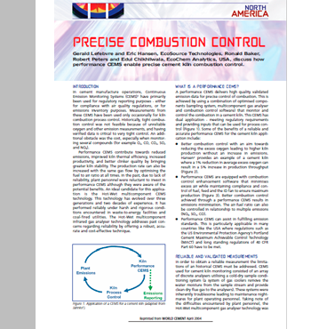

Biblioteca
Monitores de pila
Un CEMS verdaderamente integrado optimizado para aplicaciones WTE", NAWTEC 20 Paper, mayo de 2012
Control computarizado y procesamiento de señales para analizadores de infrarrojos

Control preciso de la combustión -- World Cement Paper Abril de 2004

CEMS multicomponente para instalaciones de conversión de residuos en energía, artículo NAWTEC 12, mayo de 2004
Experiencias de CEMS de componentes múltiples húmedos y calientes, artículo de AWMA, junio de 2004
Biblioteca
Materia particular
Listado de documentos técnicos PAS
Mediciones de campo dinámico de motores diésel
Contaminantes peligrosos del aire provenientes del combustible derivado de llantas
PAH de vehículos diésel que utilizan PAS
Uso del monitor PAH en una cabina de peaje de tráfico
PAH de vehículos diésel que utilizan PAS
Biblioteca
Hovacal